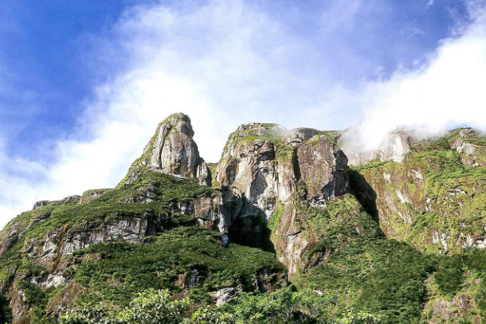
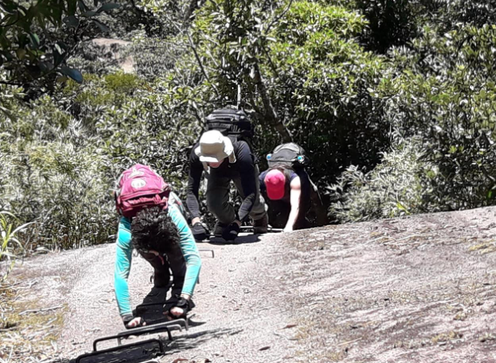
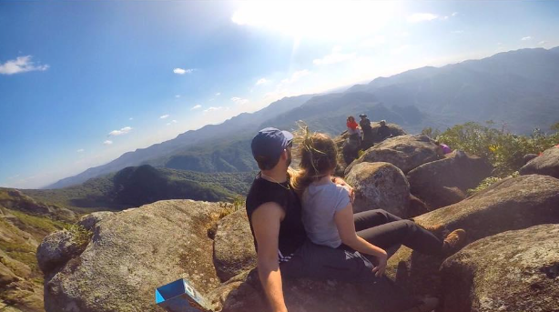

Detalhes do Roteiro
Pico Olimpo com 1539 m de altitude, localizado em pleno coração da Serra do Mar paranaense, o Parque Estadual do Marumbi resguarda muitas riquezas da Mata Atlântica brasileira. Para aqueles que gostam de atividades ao ar livre, é o local perfeito, pois oferece tanto opções de trilhas e banhos de cachoeira, quanto escaladas em belíssimas paredes rochosas, com diversos níveis de dificuldade. Com 2.340 hectares, o parque foi criado em 1990 e é hoje um dos principais atrativos turísticos do Paraná. A trilha para acesso ao Monte Olimpo se estende após a chegada à Estação do Parque Marumbi, passando antes pelo Posto do IAP e pela Estação Engenheiro Lange. Temos apoio de nosso transporte 4x4 até a Estação Engenheiro Lange, após uma trilha de calçamento de 1 km até a Base Estação Marumbi. É uma ótima opção para desfrutar uma linda vista e uma trilha até o cume do pico.
Estar atento a todos os procedimentos de segurança passados pelos condutores. Condições físicas e de saúde compatíveis. Não ingerir bebidas alcoólicas; Pessoas sob efeito de álcool em qualquer quantidade não podem participar da atividade sem direito de devolução do valor contratado. Informar por escrito qualquer condição médica que possua diferente da normalidade, bem como doenças pré-existentes e/ou uso de medicamentos - essa informação deve ser enviada por e-mail, para assim ficar registrado. ➤ Roupas de trilha: camisetas e calças leves, meias que evitam bolhas, luvas de trilha (útil para segurar em grampos e galhos), e roupas térmicas para frio intenso
Galeria de Fotos


